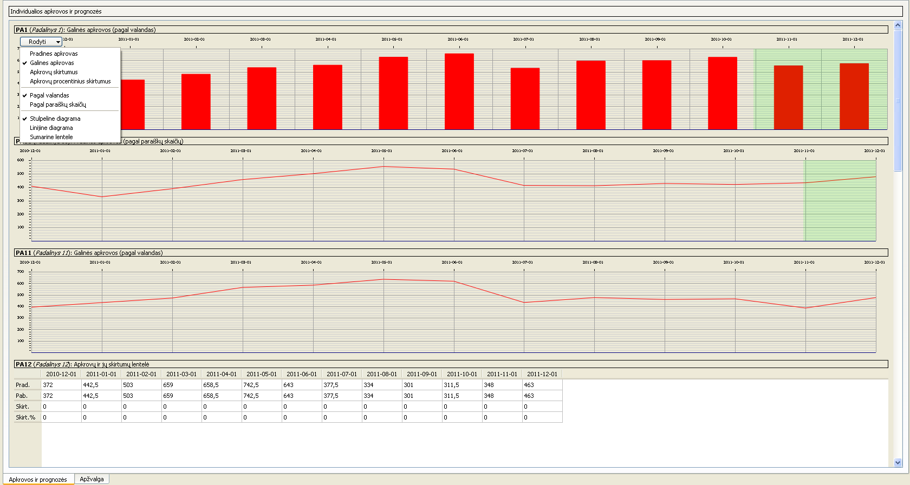

- Peržiūrėti konkretaus padalinio ar sistemos apkrovas arba prognozes nustatytame laikotarpyje
- Pakeisti rodomų rezultatų peržiūrą į stulpelinę diagramą, linijinę diagramą arba sumarinę lentelę
- Pakeisti rodomų rezultatų peržiūrą į peržiūrą pagal valandas arba paraiškų skaičių
- Pakeisti peržiūrimus rezultatus į pradinių arba galinių apkrovų rezultatus bei į paprastus arba procentinius apkrovų skirtumų rezultatus

Pastabos
- Žalsvas fonas stulpelinėse ir linijinėse diagramose parodo prognozuojamą sritį
- Gelsvas fonas stulpelinėse ir linijinėse diagramose parodo mažiausios apkrovos intervalo sritį
- Visų padalinių/sistemų rezultatų rodymo rėžimus vienu metu galima pakeisti naudojant meniu Rodyti -> Pateikti visus rezultatus.
- Paspaudus ant lentelės celės arba ant stulpelinės diagramos stulpelio, melsva spalva visose diagramose/lentelėse bus paryškintas tą celę/stulpelį atitinkantis mėnuo.
- Ilgiau palaikius pelės kursorių ant diagramos stulpelio/lentelės celės bus parodytos tą įrašą atitinkančios skaitinės reikšmės.